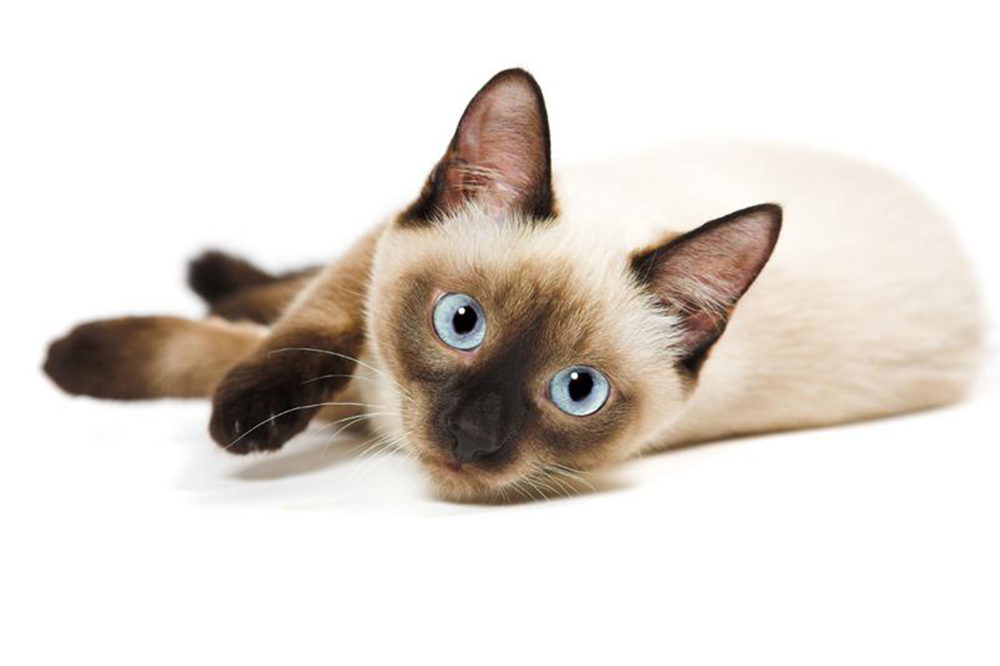

Gato Siamês
Com olhos azuis marcantes, os siameses são os gatos mais facilmente reconhecíveis. No entanto, é importante ressaltar que existem muitos gatos que possuem cores bem parecidas com a da raça, mas não são necessariamente verdadeiros siameses. Possuem um porte esbelto e atlético, com a carinha sendo bem fina.
Principais características
- Origem: Tailândia e China.
- Altura: Entre 15 e 20 centímetros.
- Pelagem: Pelos curtos.
- Expectativa de vida: Entre 15 e 20 anos.
Curiosidades
É uma raça bastante rara e não são facilmente encontrados no Brasil. No entanto, é possível achar facilmente gatos com o mesmo padrão de cores, mesmo em abrigos e instituições que resgatam gatos.
